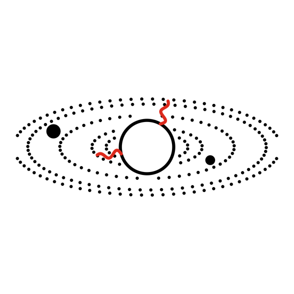

Cuento 5 de 10 · Arco I · Ohr
Sistemas planetarios

Versión sonora en producción. No será este texto leído en voz alta, sino una pieza propia.
Alrededor de cada estrella joven queda un sobrante. Gas y polvo que no alcanzaron a caer en ella y que se ponen a girar, aplanándose como masa de tortilla entre las manos, hasta formar un disco.
Lo que pasa en ese disco es lo más paciente que he visto. Un grano de polvo toca a otro y se quedan juntos. Luego son tres, diez, mil. Durante mucho tiempo no son más que pelusa, eso que se junta debajo de los muebles. Después son guijarros. Después, rocas del tamaño de montañas que chocan, se rompen, se vuelven a juntar.
Algunas crecen tanto que empiezan a jalar todo lo que tienen cerca. Esas se vuelven planetas. Las que quedan lejos de la estrella, donde hace frío, atrapan hielo y gas y se hinchan hasta volverse gigantes. Las de cerca se quedan pequeñas, de piedra y metal.
Hoy saben algo que durante siglos solo se sospechó: casi todas las estrellas que miran en la noche tienen planetas. Mundos alrededor de soles que tienen nombre de catálogo, nada más.
Yo estuve en muchos de esos discos. No elegí ninguno. Pero sé que en cada uno se repitió la misma pregunta: ¿quedará algo en el lugar justo, a la distancia justa, con el tamaño justo?

La mayoría de las veces, no. Y está bien. No todo lo que se forma tiene que ser habitado para valer la pena.
Pero una vez, en una de esas islas de estrellas, en un brazo de la espiral, una nube que llevaba muchísimo tiempo quieta empezó a caer.